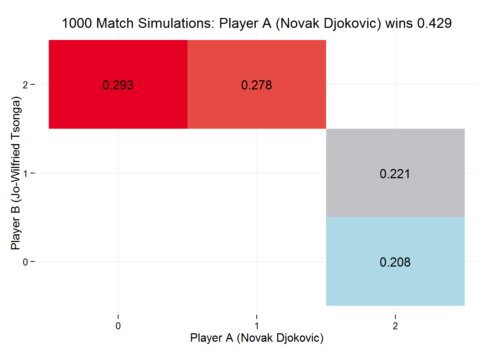
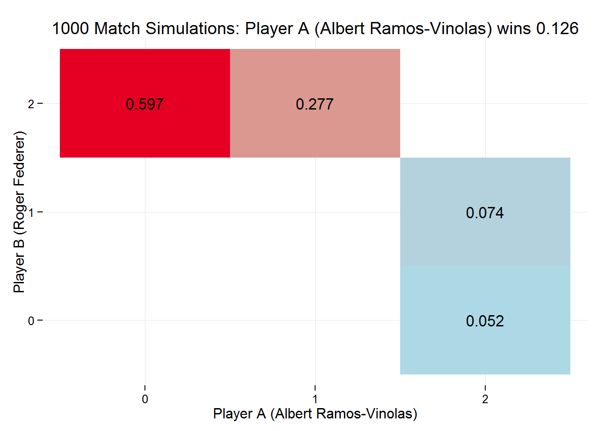

Where available this page will document a couple of randomly selected games scheduled to play today, 2015-10-12. Using the data returned by the various scripts found in the repo here, and walked through in the other pages on this site. There are 10 scheduled:
Player A, Pablo Cuevas wins 70 % of his first serve points, 51% of his second serve points, and his first serve in is 61%.
Player B, Viktor Troicki wins 73 % of his first serve points, 47% of his second serve points, and his first serve in is 60%.
match_data <- simMatches(n = 1000,
pA = todays_matches$pA[ind[1]],
p2A = todays_matches$p2A[ind[1]],
firstServeA = todays_matches$firstServeA[ind[1]],
pB = todays_matches$pB[ind[1]],
p2B = todays_matches$p2B[ind[1]],
firstServeB = todays_matches$firstServeB[ind[1]],
sets = 3,
players = c(todays_matches$playerA[ind[1]],
todays_matches$playerB[ind[1]]))
Player A, Albert Ramos-Vinolas wins 67 % of his first serve points, 51% of his second serve points, and his first serve in is 61%.
Player B, Roger Federer wins 77 % of his first serve points, 57% of his second serve points, and his first serve in is 62%.
match_data <- simMatches(n = 1000,
pA = todays_matches$pA[ind[2]],
p2A = todays_matches$p2A[ind[2]],
firstServeA = todays_matches$firstServeA[ind[2]],
pB = todays_matches$pB[ind[2]],
p2B = todays_matches$p2B[ind[2]],
firstServeB = todays_matches$firstServeB[ind[2]],
sets = 3,
players = c(todays_matches$playerA[ind[2]],
todays_matches$playerB[ind[2]]))